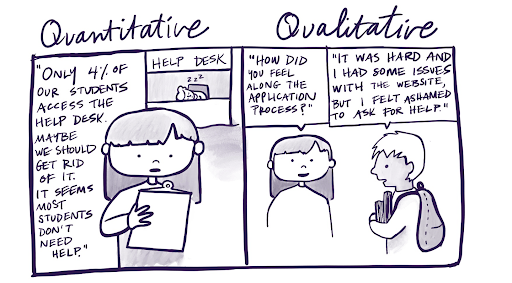

Qualitative Data

Qualitative data refers to any non-numeric forms of data that are typically textual, audio, images, or video recordings, which can be transcribed or described. This data type includes field notes, interviews, social media content (e.g., posts, comments), archival documents, and more.
Qualitative data delves into the “why” and “how” of research questions, aiming to understand underlying motivations, behaviors, and experiences. It can complement quantitative data in mixed methods studies by providing deeper insights, context, and understanding of complex research phenomena.
Despite of its advantages, handling and analyzing qualitative data requires specialized skills, tools, and techniques to overcome the following challenges:
Volume and lack of structure: qualitative data is often unstructured, voluminous, and more time-consuming to organize and analyze.
Subjectivity and sensitivity: researchers may have different perspectives on the meaning and significance of qualitative data, leading to potential biases, and reliability and validity issues.
Labor-intensive: collecting, transcribing and analyzing large volumes of qualitative data can be time-consuming. Qualitative data analysis typically requires multiple iterations and refinements and extra effort regarding the removal of sensitive information.
Qualitative researchers should be aware of the above limitations and plan accordingly in order to identify ways to improve the transparency and reusability of their work.
Scientific Rigor in Qualitative Research
Scientific rigor manifests differently in qualitative research. Unlike quantitative research, which produces numerical results, qualitative research yields findings. These findings consist of insights, themes, and patterns that emerge from analyzing non-numerical. They offer a descriptive and interpretive understanding of the studied phenomenon and play a crucial role in theory-building and contextual understanding, laying the groundwork for exploring phenomena in depth and inform practical applications.
A key challenge in qualitative research is establishing the credibility of these findings, as they lack the objective metrics used in quantitative research, such as validity and reliability checks. Also, instead of aiming for generalizability to a broader population, qualitative research provides in-depth insights into specific contexts or groups, enhancing our understanding of the subject matter within those contexts.
Qualitative researchers use the concept of “trustworthiness” as a foundational scientific rigor principle, which is built on four key pillars:
Credibility: the confidence in the truthfulness of the findings.
Transferability: the extent to which the findings are applicable to other contexts.
Dependability: the consistency of the findings and their potential for replication.
Confirmability: the degree to which the findings are shaped by the respondents rather than influenced by researcher bias or personal interests.
Later in this course, we’ll cover some practical recommendations to increase the trustworthiness of your qualitative research findings.
Data Types in Qualitative Research

Qualitative data includes a diverse array of sources, ranging from those obtained through direct interaction with human participants to those generated independently of a research protocol. Although not originally intended for research, some data can still be analyzed and explored through a research lens. Think about a sociologist or communication researcher who analyzes social media posts to study the public discourse on a particular topic.
Qualitative data types include written text, recordings and their transcriptions, and imagery found in diaries, personal notes, letters, emails, news articles, social media platforms, official documents, policies, medical records, meeting minutes, and other organizational documents, and much more. These sources are analyzed to gain insights into attitudes, behaviors, and cultural norms on a variety of topics.
Qualitative data also includes the analysis of literature, film, music, and artifacts—whether produced, valued, accumulated, or possessed by research participants or their communities. These artifacts, such as products, remains, artwork, photographs, or prototypes, can reveal both explicit and implicit (or overt and covert) values, attitudes, beliefs, and experiences crucial for understanding the phenomenon under study.
Qualitative data can be collected through various research methods. Defining the best approach to obtain qualitative data depends on several factors, including the research question(s), the dispersion of research subjects, the nature of the data needed, and the study context. Below, are the most common methods:
Document analyses: Examination of written or recorded materials to gain insights into past events, attitudes, and experiences.
Open-ended digital surveys: Online questionnaires with open-ended questions to collect qualitative data at scale to capture participants’ opinions, experiences, and suggestions.
Focus Groups: Moderated discussions among a small group of participants representing the targeted population or the community of interest, allowing researchers to observe interactions and gather collective insights on a specific topic.
Observations: Close monitoring and recording of behaviors, interactions, and phenomena in natural physical or online setting and the context in which those are generated. Observations might be naturalistic - when researchers observe people in their natural setting without interference -, or participatory - when the investigator becomes an active member of the group being observed.
Field Work: Researchers produce annotations based on their observations, reflections, and impressions during fieldwork, capturing nuances and contextual details that other methods may not capture.
Case Studies: In-depth examination of a single individual, group, or organization, using multiple data sources to explore complex phenomena within real-life contexts.
Ethnography: Immersive, long-term engagement with a particular community or culture, aiming to understand its social dynamics, rituals, and practices through participant observation and interaction. It may also be conducted online to explore communities and cultures formed and active through computer-mediated social interaction.
One-to-one Interviews: Direct conversations between the researcher and participants, allowing in-depth exploration of thoughts, experiences, and perspectives. Interviews can be structured, semi-structured, or unstructured and be conducted utilizing various means (phone, online, in-person).
This course will use qualitative research data from direct interactions between researchers and human participants through interviews.
When dealing with human subjects’ data, ethical considerations become significantly more complex due to the direct impact on individuals’ privacy, rights, and well-being. In the next episode, we will cover ethical considerations and additional steps researchers should take when conducting research with human participants.
Recommended/Cited Sources:
Creswell, J. W., & Creswell, J. W. (2007). Qualitative inquiry & research design: choosing among five approaches (Second edition.). Sage Publications. (UCSB Library Catalog)